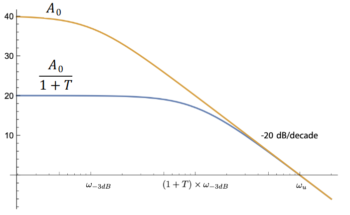

非理想运算放大器
1. 实体运放模型
一个实体的运算放大器通常由以下两个模块组成：
- 一个运算跨导放大器（operational transconductance amplifier，简称 OTA）
- 一个在不加载信号源的情况下，将输入电压复制到输出端的单位增益缓冲器
一个运算跨导放大器本质上是一个压控电流源，其输出可建模为 \(I=G_m(v_p-v_n)\)。它的输出是电流，所以我们需通过电阻 \(R_x\) 把电流转化成电压。电容 \(C_x\) 用于提供一个主极点，以防止高频率震荡。由于它是电流源，通常会选择很大的并联电阻 \(R_x\)，以获得高输出阻抗。
不过，由于输出阻抗很高，还须添加单位增益缓冲器，以免电路对 OTA 造成负载。许多运放内部就是由一个 OTA 和一个缓冲器构成的。
2. 运放的非理想性质
当我们分析一个理想运放时，我们做了一些跟现实世界中不同的假设：
| 特性 | 理想 | 实际 |
|---|---|---|
| 增益 | \(\infty\) | 有限 |
| 带宽 | \(\infty\) | 有限 |
| \(Z_{in}, Z_{out}\) | \(\infty, 0\) | 有限 |
| 失调电压 | 0 | mV 级 |
| 输入偏置电流 | 0 | pA 至 uA |
| 输出摆幅 | 不受限制 | 受电源限制 |
| 压摆率 | 不受限制 | 有限 |
In particular, we have already seen how we can use negative feedback to decouple the closed-loop gain from the non-ideal open-loop gain of the op-amp, provided that the open-loop gain is very large.
2.1. Gain-Bandwidth
Using our OTA plus unity buffer model, by Ohm's Law we can derive the gain to be \(A_0 = G_mR_x\). The capacitor provides us with a pole whose cutoff frequency is \(\omega_c = \frac{1}{R_xC_x}\). An interesting observation is that the gain-bandwidth product depends only on the values of \(G_m\) and \(C_x\):
\begin{align} A_0\omega_c = \frac{G_m}{C_x} \end{align}We can increase our bandwidth by around \(1 + \beta A_0\) if we use negative feedback, but our gain drops by the same factor making the GBW product constant:

2.2. Offset Voltage
Real op-amps often have a nonzero DC offset voltage. This offset voltage can often be trimmed by connecting a potentiometer to the two offset-nulling terminals of the op-amp. The wiper of the potentiometer is connected to the negative supply of the op-amp.
2.3. Slewing
Real amplifier output is limited by its slew rate, or the maximum rate of change at the output:
\begin{align} \text{SR} = \frac{\text{d}V_o}{\text{d}t} \end{align}This is often specified in datasheets in units of \(\frac{\text{V}}{\mu \text{s}}\). Since the OTA can only supply a limited amount of current, slewing comes from the fact that the change in the voltage of the capacitor in the OTA is limited based on \(I_{\text{max}}=C_x\frac{\text{d}V}{\text{d}t}\).